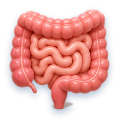
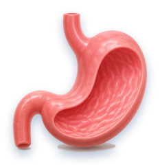
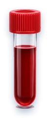
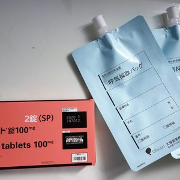
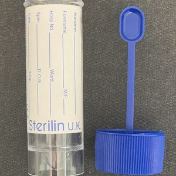

Когда не ждать
Вздутие и тяжесть чаще всего не опасны. Но есть признаки, при которых сначала нужно исключить серьёзное.
Стоп-сигналы
- !Кровь в стуле или чёрный стул
- !Вес уходит сам, без диеты
- !Боль или понос будят ночью
- !Трудно глотать, повторяется рвота
- !Всё началось после 50 лет
Есть хотя бы один пункт? Не откладывайте - заполните анкету: помогу составить план обследования и разберу результаты.

8 сигналов, что кишечник крадёт энергию
Отметьте, что есть у вас:
Совпало 3 и больше - это повод искать причину
А не лечить симптомы по отдельности. Железо, B12 и магний всасываются в кишечнике - если всасывание нарушено, можно есть правильно и всё равно жить на дефиците. Какие анализы это покажут - ниже.
Разобрать мой случай - заполнить анкетуМенеджер напишет в WhatsApp и ответит на вопросы. Ни к чему не обязывает.
Совпало немного - уже хорошо 🙌
Но если вы устаёте, а анализы «в норме», причина может быть не на виду. Посмотрите карту ЖКТ и анализы ниже - и сохраните страницу.
Смотреть карту ЖКТ ↓Вы - не то, что съели, а то, что усвоили
Едите правильно
мясо, овощи, витамины
Кишечник не усваивает
гастрит, СИБР, целиакия
Железо и B12 на нуле
усталость, туман, выпадают волосы
ЖКТ - это не только живот
взрослых в онлайн-опросе отвечают критериям функционального расстройства ЖКТ
Rome Foundation, 73 076 человек, 33 странылюдей в мире заражены хеликобактером
оценка на 2015 годлюдей - целиакия по антителам, 0,7% - по биопсии
≈ 1 из 70-140 (наш расчёт)людей с дефицитом B12 принимали омепразол 2+ года - против 7,2% без дефицита
JAMA, 2013Живот может и не болеть. Это видно только в анализах.

Где сбой?

8 анализов для ЖКТ
Нажмите «+ в мой список» - соберёте личный список и сможете скопировать его или отправить себе.

Хеликобактер
дыхательный тест или антиген в калеВажно: 14 дней до теста без омепразола и похожих препаратов, 4 недели без антибиотиков - иначе результат может быть ложно отрицательным.

Кальпротектин в кале
порог: 50 мкг/гПоказывает воспаление в кишечнике. Помогает отличить «чувствительный кишечник» от воспалительного заболевания.
Эластаза-1 в кале
чаще всего порог 200 мкг/гФерменты поджелудочной. Если их мало - жирный, «плавающий» стул, вздутие, хуже усваиваются жиры и витамины A, D, E, K.
Дыхательный тест на СИБР
водород: рост от 20 ppm за 90 мин · метан от 10 ppmИзбыток бактерий в тонкой кишке. Типичная картина - живот раздувается вскоре после еды.
Антитела к тТГ IgA + общий IgA
проверка на целиакиюСдавать на обычном питании с глютеном. Общий IgA - чтобы не пропустить его нехватку, при которой тТГ IgA выглядит нормальным.
Ферритин + общий анализ крови
дефицит: ферритин < 30 нг/млЗапас железа. Если ферритин не растёт на железе, причину ищут во всасывании.
Витамин B12
норма 148-740 пмоль/л · низ нормы - смотреть глубжеЧаще низкий у тех, кто 2 года и дольше принимает омепразол и похожие препараты.
Витамин D и магний
D: дефицит < 20 нг/мл · Mg 0,66-1,07 ммоль/лМагний может падать при приёме омепразола и похожих препаратов, обычно дольше года - FDA предупреждает об этом с 2011 года.
Мой список анализов (0)
4 ошибки, из-за которых живот лечат годами
✕«Сдам анализ на дисбактериоз»
Посев кала показывает бактерии последней порции стула, а не то, что происходит в тонкой кишке. Для решений он почти ничего не даёт.
✕«Уберу глютен и посмотрю»
Анализ на целиакию сдают на обычном питании с глютеном. Без глютена он может стать ложно чистым - а целиакия есть у 0,7-1,4% людей.
✕«Омепразол - безобидная таблетка»
Среди людей с дефицитом B12 2 года и больше его принимали 12% - против 7,2% без дефицита. Магний тоже может падать.
✕«Ферменты и пробиотики на всякий случай»
Ферменты нужны, когда эластаза низкая. Без анализов это наугад: сначала цифры, потом добавки.

С чего начать без вреда
Клетчатка - по 5 г в неделю
Овощи, ягоды, бобовые, цельные крупы. Резкий скачок даёт вздутие.
Вода - вместе с клетчаткой
Без воды клетчатка может крепить.
Еда вместо порошков
Сначала тарелка, потом банки с добавками.
Дневник на 14 дней
Еда, симптомы и стул по Бристольской шкале:

Одна и та же цифра значит разное
Ферритин 25 у человека с хеликобактером и у вегетарианца - две разные истории и два разных решения.
Аружан, 33 года
Было: разбитость с утра, усталость к середине дня, выпадение волос. Нашли: скрытый железодефицит - низкий ферритин при нормальном гемоглобине. Стало: больше энергии, дефицит железа восполнен.
Результат индивидуален и зависит от исходных данных.Разбор подойдёт, если:
- устаёте, хотя спите достаточно
- ферритин или B12 не растут
- живот беспокоит дольше месяца
- анализы «в норме», а сил нет
- совпало 3+ пункта в самопроверке
Не знаете, с чего начать? С этого разбор и начинается.
Разберём ваш ЖКТ и вашу усталость
- Персональный список анализовЧто сдать именно вам, без лишнего.
- Где теряются железо и витаминыПо вашим цифрам, а не по среднему референсу.
- Питание под ваш животЧтобы не вздувало, без жёстких диет.
- Добавки по анализамЧто нужно, а что можно не покупать.
До Нового года - около 20 мест
Беру до 3 человек в неделю - места быстро заканчиваются. Разберитесь до праздников: застолья - нагрузка на ЖКТ, а анализы готовятся несколько дней.
- 1АнкетаКороткая анкета - менеджер пишет в WhatsApp, отвечает на вопросы и подбирает формат.
- 2Подробнее о васСимптомы, стул, питание, лекарства, что уже пробовали.
- 3АнализыСоставляю персональный список. Есть свежие - смотрю, чего не хватает.
- 4Консультация со мнойZoom, 60-90 минут, один на один.
- 5После консультацииКарта восстановления, план питания и 3-5 дней обратной связи.
Консультация платная. Стоимость зависит от формата - менеджер подберёт его под вашу ситуацию.
Заполнить анкету →Пара минут. Менеджер ответит в WhatsApp - ни к чему не обязывает.
Источники (11)
- Sperber A.D. и соавт. Rome Foundation Global Study. Gastroenterology 2021;160:99-114 - 73 076 взрослых, 33 страны; 40,3% участников онлайн-опроса
- Hooi J.K.Y. и соавт. Global prevalence of H. pylori. Gastroenterology 2017;153:420-429 - около 4,4 млрд человек (2015)
- Malfertheiner P. и соавт. Maastricht VI/Florence. Gut 2022;71:1724-1762 - без ИПП 14 дней, без антибиотиков и висмута 4 недели до теста
- Singh P. и соавт. Clin Gastroenterol Hepatol 2018;16:823-836 - целиакия 1,4% по антителам, 0,7% по биопсии
- Rubio-Tapia A. и соавт. ACG Guidelines: Celiac Disease. Am J Gastroenterol 2023;118:59-76 - тТГ IgA на диете с глютеном + общий IgA
- Lam J.R. и соавт. JAMA 2013;310:2435-2442 - ИПП 2+ года: 12,0% vs 7,2%, отношение шансов 1,65
- FDA Drug Safety Communication, 2 марта 2011 - низкий магний на ИПП, обычно после года приёма
- Rezaie A. и соавт. North American Consensus on breath testing. Am J Gastroenterol 2017;112:775-784 - водород ≥20 ppm за 90 мин, метан ≥10 ppm
- NICE DG11 (сейчас HTG320) - кальпротектин, порог 50 мкг/г. Löhr J.M. и соавт. HaPanEU. UEG J 2017 - эластаза-1, чаще всего 200 мкг/г
- Нормы ферритина, B12, витамина D, магния - Метаболический справочник №1 (WHO 2020, Endocrine Society)
- Фото: Wikimedia Commons - Oleg Yunakov, melvil, Whispyhistory (CC BY-SA 4.0), formulatehealth (CC BY 2.0)